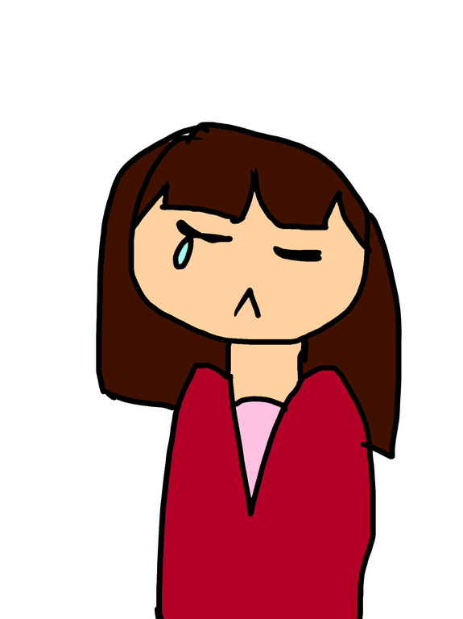
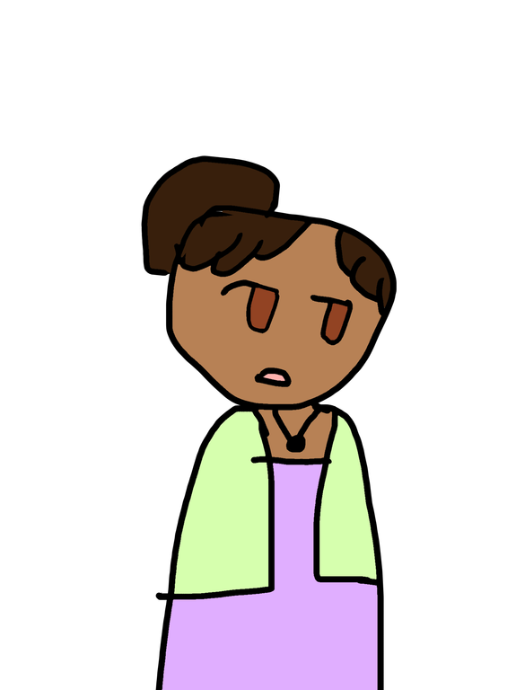
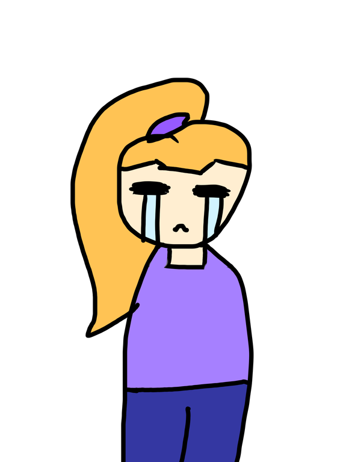
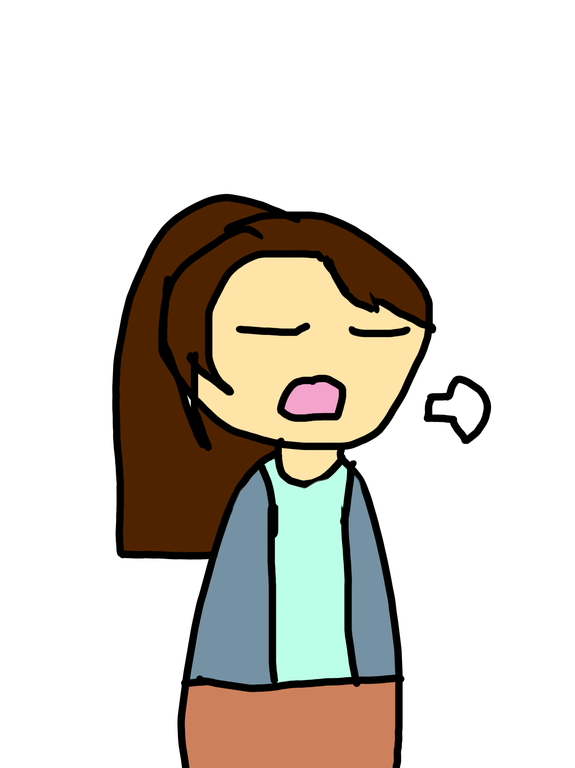

A young gentleman was found dead at the Lovers Hotel. He was supposed to be going on a date when he ran into some people that he knew. They got into a fight, and afterwards everyone left the area. At around 11 PM, a waiter found the gentleman stabbed and called the police. No one knows who killed him, but it seems that someone he knew might have been responsible.



